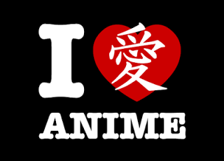
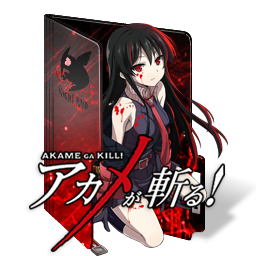
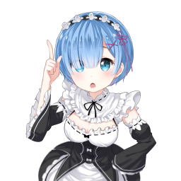

Recomendações de Animes

AKame Ga kill

Akame ga Kill! (アカメが斬る! Akame ga Kiru!?, o significado literal pode ser "Assassina de Olhos Vermelhos" ou até mesmo "A Assassina Akame") é uma série de mangá shonen Japonês escrita por Takahiro e ilustrada por Tetsuya Tashiro. Iniciou sua serialização na Gangan Joker da Square Enix em Março de 2010
Acesse o link para Assistir
Re zero

Re:Zero kara Hajimeru Isekai Seikatsu (Re：ゼロから始める異世界生活?), também conhecido como Re:Zero − Starting Life in Another World, é uma série de light novel escrita por Tappei Nagatsuki e ilustrada por Shinichirou Otsuka. A história se centra em Subaru Natsuki, um hikikomori que de repente se vê transportado para outro mundo enquanto voltava para casa após sair de uma loja de conveniência. A série foi inicialmente serializada no website Shōsetsuka ni Narō a partir de 2012. Onze volumes foram publicados pela editora Media Factory desde 25 de janeiro de 2014, com a impressão da MF Bunko J.
Acesse o link para Assistir